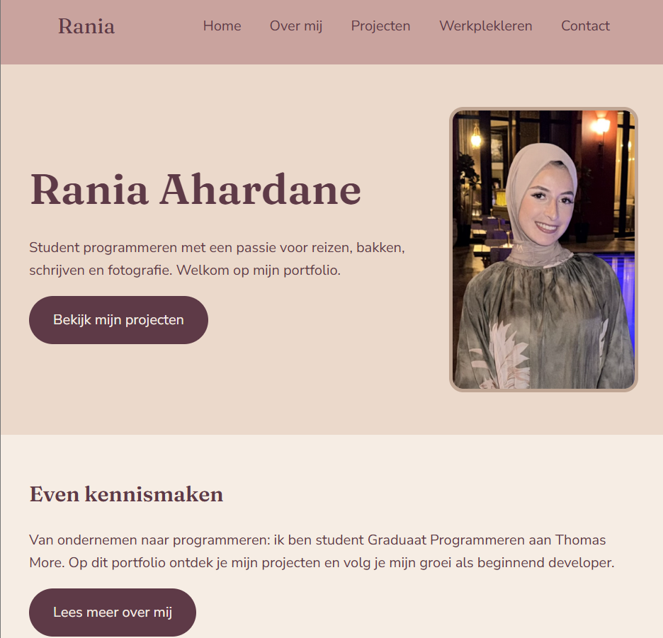

Mijn portfolio
Beschrijving
Een persoonlijke website om mezelf voor te stellen aan werkgevers en stagebedrijven, gebouwd met HTML en CSS.
Evolutie van het project
Ik begon met een moodboard, daarna maakte ik wireframes en een prototype. Het kleurenpalet veranderde onderweg van pastelroze en blauw naar olive, sand, rose, plum en taupe, omdat dat professioneler en warmer oogt voor mijn doelgroep.
Screenshots
